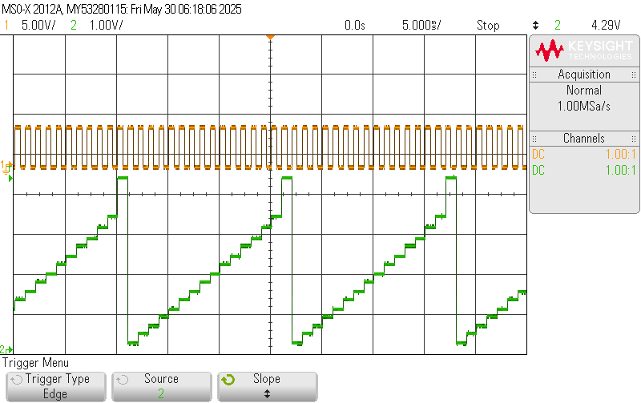

About Me
I am an Electrical Engineering student at Cal Poly SLO. I am interested in aerospace, nuclear energy, and sustainable transportation. I possess a unique blend of outdoor leadership and critical problem-solving skills honed through extensive backcountry skiing and dedicated volunteer service with Teton County Search and Rescue. I also compete in mountain and road cycling at the collegiate level as a valued member of the Cal Poly Club Cycling Team, demonstrating my commitment, discipline, and time-management skills.
Education
- Jackson Hole High School (Aug 2020 - Jun 2024)
-
California Polytechnic State University - San Luis Obispo (Cal Poly SLO)
B.S., Electrical Engineering (Sept 2024 - May 2028)
Revelant Courses
Jackson Hole High School
- AP Computer Science A: Learned Java and object-oriented programming.
- AP Physics C: Learned calculus-based mechanics, electricity, and magnetism; built strong physics fundamentals.
- AP Calculus AB: Obtained strong math fundamentals.
- AP English Language: Obtained quality writing skills.
- Dual Enrollment Spanish Language Arts: Final Spanish course after 10 years of Spanish in school.
California Polytechnic State University - San Luis Obispo
- EE 113 - Circuits 1: Learned about basic circuits, op-amps, manufacturing, and reliability.
- MATH 241 - Calculus 4: My favorite math class. Learned multivariable and vector calculus.
- CPE 133 - Digital Design: Learned digital design, wrote Verilog, and used AMD Vivado to test digital circuits on an FPGA.
- CPE 233 - Computer Design and Assembly Language Programming: Wrote RISC-V assembly, learned computer design, and modeled an MCU using SystemVerilog and AMD Vivado.
Skills
Hard Skills:
- PCB design (EAGLE, Altium, LTspice)
- PCB assembly (soldering, desoldering)
- PCB testing and troubleshooting (oscilloscopes, multimeters, waveform generators, power supplies)
- CAD (Fusion 360, Tinkercad)
- 3D printing
- Programming (Python, C/C++, Java, Arduino)
- Data analysis (Excel, Python)
- Web development (HTML, CSS, JavaScript)
- Technical writing
- Drone piloting and operations (DJI, FPV)
- RISC-V assembly
- FPGA (AMD/Xilinx Vivado)
- Technical problem-solving
Soft Skills:
- Leadership
- Teamwork
- Public speaking
- Communication
- Time management
- Adaptability
- Critical thinking
- Problem-solving
- Attention to detail
Experience
-
Cal Poly Space Systems Avionics (Sept 2024 - Present)
I am currently developing an electronic system and test vehicle to support a booster recovery project. The system supports ArduPilot, GPS, RC control, and onboard FPV cameras. The flight computer I selected features an STM32. Previously, I supported hardware development to meet requirements for new projects and designed, assembled, soldered, and tested telemetry hardware for competition rockets.
Cal Poly Space Systems telemetry PCB assembly.
-
Factory Information Technology Intern (Jun 2021 - Aug 2024)
I resolved over 100 technical issues on client sites through effective collaboration with in-office staff. I also took ownership of recycling more than 1,000 laptops and workstations, prioritizing client security by ensuring the complete erasure of data from storage hardware. My work with the finance and accounting department involved establishing secure storage solutions for their sensitive information. Furthermore, I managed detailed tracking of hardware assets throughout the recycling process, maintaining thorough documentation, and implemented environmentally responsible recycling practices to minimize the impact of disposed materials.
-
Jackson Hole Composite Mountain Biking Captain (Jun 2023 - Oct 2023)
As a six-year member of the Jackson Hole Composite mountain bike team, I encouraged teammates to challenge themselves by competing in higher categories, a strategy that contributed to increased team points. I helped cultivate a culture of success among all team members, directly supporting the team’s podium finish as a Division 1 Idaho mountain bike team. I also served as a positive role model for younger members, consistently encouraging high performance and exemplary sportsmanship both on and off the bike.
-
Teton County Search and Rescue Venture Crew (May 2023 - Jun 2024)
I led avalanche and other critical backcountry training sessions, taking the initiative to ensure that over 50 members not only understood but actively adhered to best practices and crucial safety protocols, fostering a culture of preparedness and responsibility within the team. I also participated in organization-wide meetings, demonstrating commitment to the broader mission and gaining valuable insights into the dynamics and strategies of high-performing teams and effective organizational structures.
Projects
-
Autonomous FPV Drone
Developing an FPV wing UAV using ArduPilot to support a Cal Poly Space Systems booster recovery project.

-
Espresso Scale
Developing an Arduino Nano-based espresso scale with the goal of undercutting higher-end scales.

-
RISC-V MCU
Designed and implemented a RISC-V MCU on an FPGA using SystemVerilog and AMD Vivado.
Wrote and simulated RISC-V assembly code to verify functionality.

-
Digital-to-Audio Converter PCB
Designed, assembled, and tested a 4-bit digital-to-audio converter. I designed the PCB using LTspice and EAGLE, hand-soldered all surface-mount and through-hole components, and tested the DAC using modern oscilloscopes, waveform generators, multimeters, and power supplies.
Oscilloscope screenshot showing functional DAC output.
-
Moonguessr
I developed and shipped a game inspired by GeoGuessr where the player is given an image from the lunar surface and asked to find the location on the lunar map provided by NASA’s Lunar Reconnaissance Orbiter.
-
Morse Code Trainer
As part of my Introduction to Electrical Engineering lab, my group built a Morse Code trainer using an Arduino Mega that translates button presses into text.

Athletics
-
Cal Poly Cycling (Sep 2024 - Present)
I compete in mountain and road bike races year-round. I have competed in Mountain Bike National Championships and other USA Cycling-sanctioned events.


-
Ski Mountaineering (Dec 2020 - Present)
I have skied highly technical descents in Grand Teton National Park, such as the Middle Teton, South Teton, Nez Perce, and more.

Atop the Middle Teton before descending the east-facing glacier.
Contact
Email: mbhuseby@calpoly.edu
LinkedIn: Miles Huseby